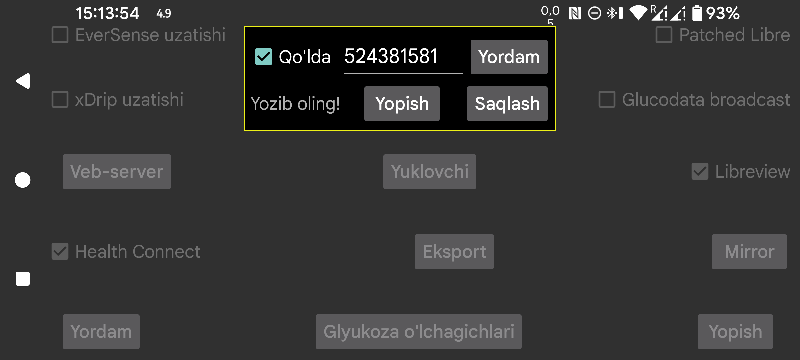

ar be de es fr hi it ja ko nl pl ru tr uk uz zh en
FreeStyle Libre 3 sensorini NFC orqali skan qilish uchun kerak bo‘ladigan Libreview Account ID’ni qanday olish mumkin?
Agar Qo‘lda tanlansa, Account ID’ni o‘zingiz kiritishingiz mumkin. Shuningdek Qo‘lda belgisini olib tashlab, Libreview’dan tugmasini bosib, hisobning e‑mail manzili va parolidan foydalanib uni Libreview’dan olishingiz mumkin.
Libreview Account ID’ni Libreview’dan olib bo‘lgach, keyin yana Qo‘lda ni yoqib, Libreview hisobining e‑mail manzili va parolini o‘zgartirish ham mumkin. Shundan so‘ng Libreview’ga yuborish ni yoqib, Ma’lumotni qayta yuborish ni bossangiz, ma’lumot boshqa Libreview hisobiga yuboriladi, lekin sensorni NFC orqali skan qilishda avvalgi yoki qo‘lda kiritilgan Account ID ishlatilaveradi. Shu yo‘l bilan Juggluco ma’lumotni Abbott’ning Libre 3 ilovasi ishlatayotgan hisobdan boshqa Libreview hisobiga yuborishi mumkin.